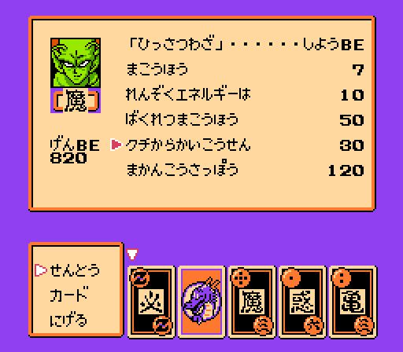
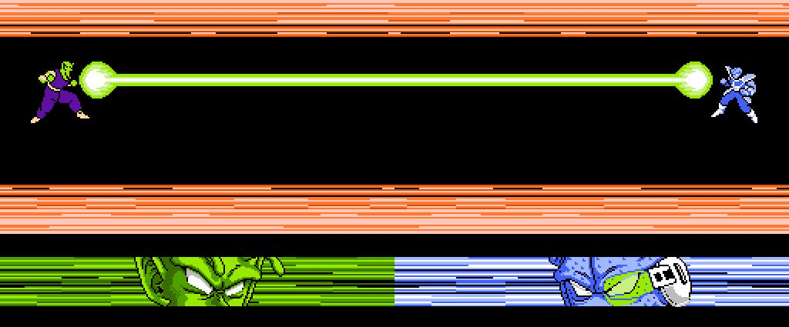

〔本文使用「口から怪光線」授權條款〕
2011 年 1 月 23 日，制定〔本文使用 JUSTFLATTER 授權條款〕第二版，並更名為「口から怪光線」授權條款（くちからかいこうせん），聲明這是一則「嘴砲文」，認真你就輸了。
口から怪光線
這是《ドラゴンボールＺ．強襲！サイヤ人》中，ピッコロ（比克）的必殺技之一，中文是「口發怪光線」。


2011 年 1 月 23 日，制定〔本文使用 JUSTFLATTER 授權條款〕第二版，並更名為「口から怪光線」授權條款（くちからかいこうせん），聲明這是一則「嘴砲文」，認真你就輸了。
這是《ドラゴンボールＺ．強襲！サイヤ人》中，ピッコロ（比克）的必殺技之一，中文是「口發怪光線」。

